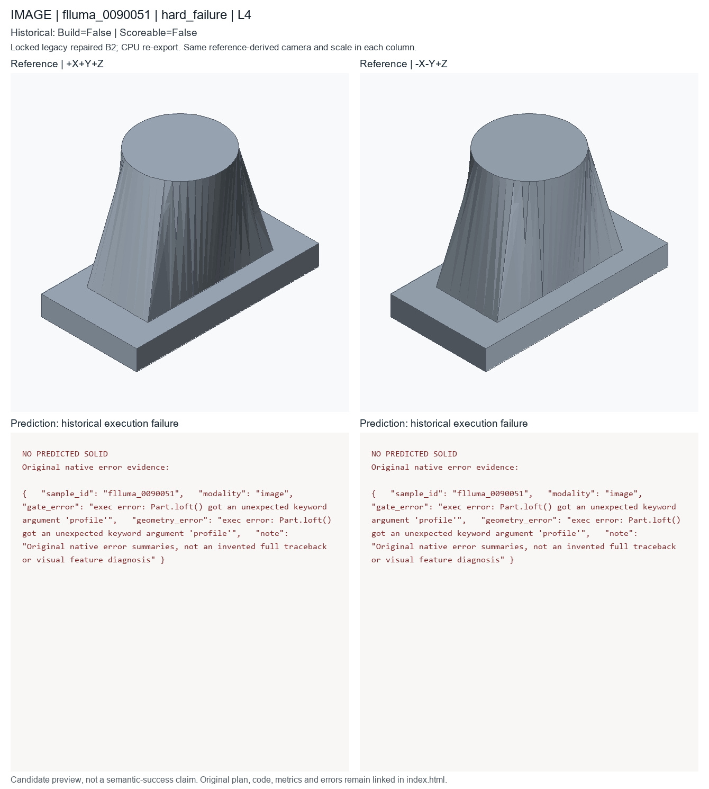
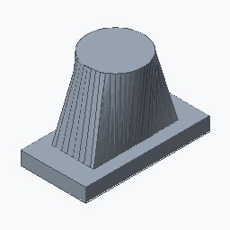

hard_failure; L4; historical deployed repaired B2. Candidate status is unchanged.
Dominant first-failure stage and exact native error; median reference feature count; sample-ID tie break
These are new CPU exports of locked historical code, not newly generated model predictions or recovered original temporary STEP files. Executable does not mean semantically accurate. Historical seed/checkpoint-byte binding remains unresolved.


A built from 8 ordered CAD features, approximately 36.54 by 19.07 by 25 mm. Build a lofted transition bracket with 4 bolt holes and dimensions of 36.54 by 19.07 by 25 mm.
PART flluma_0005000 CAT lofted_transition_profile_bracket UNITS mm SEED 20265514 PARAM flange_height 13.1 MIN 4 MAX 24 EXPR height*0.77 SEM primitive_height PARAM flange_radius 7.04 MIN 3 MAX 18 SEM loft_radius PARAM flange_width 35.1 MIN 8 MAX 50 EXPR width*0.101 SEM primitive_width PARAM hole_radius 1.3 MIN 0.5 MAX 4 SEM hole_radius PARAM pocket_length 18.14 MIN 8 MAX 48 EXPR width*0.516 SEM pocket_length PARAM pocket_width 10.14 MIN 5 MAX 28 EXPR height*0.36 SEM pocket_width PARAM thickness 6 MIN 3 MAX 25 SEM thickness PARAM transition_height 4.7 MIN 3 MAX 18 EXPR thickness*0.78 SEM loft_height F sketch_001 OP_SKETCH SEM loft_profile ROLE profile_definition PARAMS points=[[-15.74,-6.25],[-3.73,-12.93],[13.97,-18.65],[17.91,1.44],[19.66,9.33],[6.45,15.56],[-10.6,11.31],[-18.45,3.94]] profile_type=polygon F sketch_002 OP_SKETCH SEM pocket ROLE profile_definition PARAMS points=[[5.73,2.9],[-4.73,8.79],[-1.9,13.92],[8.17,10.01],[11.5,3.22]] profile_type=polygon F boolean_cut_001 OP_FACE_EXTRUDE_CUT SEM pocket ROLE functional_feature DEP sketch_002 TARGET sketch_002 F box_001 OP_BOX SEM flange ROLE secondary_feature PARAMS height=@flange_height length=@flange_width width=@flange_radius F translate_001 OP_TRANSLATE SEM placement ROLE secondary_feature DEP box_001 PARAMS offset=[0,5.65,2.95] F loft_001 OP_LOFT SEM lofted_transition ROLE secondary_feature DEP sketch_001,translate_001 TARGET sketch_001,translate_001 F cylinder_001 OP_CYLINDER SEM boss ROLE secondary_feature PARAMS height=@thickness radius=@thickness F translate_002 OP_TRANSLATE SEM placement ROLE secondary_feature DEP cylinder_001 PARAMS offset=[0,4.1,2.75] F boolean_join_001 OP_BOOLEAN_JOIN SEM joined_boss ROLE secondary_feature DEP loft_001,translate_002 TARGET loft_001,translate_002 F hole_001 OP_HOLE_PATTERN SEM mounting_hole ROLE functional_feature DEP boolean_join_001 TARGET boolean_join_001.top_face PARAMS count=4 depth=THROUGH positions=[[5.73,2.9],[8.17,4.74],[5.73,6.28],[-8.17,4.74],[-5.73,2.9]] radius=@hole_radius END
# Literal first40 lines of executed prediction; full program is prediction.py
params = Parameters()
params.add('flange_height', 13.1, min=4.0, max=24.0, expression='height * 0.77', semantic_type='primitive_height')
params.add('flange_radius', 7.04, min=3.0, max=18.0, semantic_type='loft_radius')
params.add('flange_width', 35.1, min=8.0, max=50.0, expression='width * 0.101', semantic_type='primitive_width')
params.add('hole_radius', 1.3, min=0.5, max=4.0, semantic_type='hole_radius')
params.add('pocket_length', 18.14, min=8.0, max=48.0, expression='width * 0.516', semantic_type='pocket_length')
params.add('pocket_width', 10.14, min=5.0, max=28.0, expression='height * 0.36', semantic_type='pocket_width')
params.add('thickness', 6, min=3, max=25, semantic_type='thickness')
params.add('transition_height', 4.7, min=3.0, max=18.0, expression='thickness * 0.78', semantic_type='loft_height')
part = Part('flluma_0005000', category='lofted_transition_profile_bracket', parameters=params, seed=20265514, sample_id='flluma_0005000', units='mm')
sketch = part.sketch_polygon(name='loft_profile', points=[[-15.74, -6.25], [-3.73, -12.93], [13.97, -18.65], [17.91, 1.44], [19.66, 9.33], [6.45, 15.56], [-10.6, 11.31], [-18.45, 3.94]], closed=True, semantic_type='loft_profile')
solid = part.loft(name='loft_bracket_transition', profile=sketch, semantic_type='lofted_solid')
box = part.box(name='transition_flange_seed', length=params['flange_width'], width=params['flange_height'], height=params['thickness'], semantic_type='flange')
moved = part.translate(name='place_transition_flange', target=box, offset=[0.0, 5.65, 2.95], semantic_type='placement')
join = part.boolean_join(name='join_transition_flange', target=solid, tool=moved, semantic_type='flange')
pocket_profile = part.sketch_polygon(name='loft_transition_pocket', points=[[5.73, 2.9], [4.73, 8.79], [1.9, 13.92], [8.17, 10.01], [11.5, 3.22]], closed=True, semantic_type='pocket_profile')
pocket = part.boolean_cut(name='cut_transition_flange_profile', target=join, tool=pocket_profile, semantic_type='pocket')
holes = part.hole_pattern(name='transition_flange_bolt_holes', target=pocket.top_face(), radius=params['hole_radius'], depth='through', positions=[[5.73, 2.9], [8.17, 4.74], [5.73, 6.28], [-8.17, 4.74], [-5.73, 2.9]], semantic_type='bolt_hole_pattern')
__all__ = ['part']
{
"sample_id": "flluma_0090051",
"modality": "image",
"gate_error": "exec error: Part.loft() got an unexpected keyword argument 'profile'",
"geometry_error": "exec error: Part.loft() got an unexpected keyword argument 'profile'",
"note": "Original native error summaries, not an invented full traceback or visual feature diagnosis"
}